RPART : fichier ‘spam’
Introduction
Cet onglet à pour objectif de présenter la méthode CART (Classification And Regression Trees), Breiman et al (1984). La méthode CART sera présentée à travers la fonction rpart {rpart} implémentée dans RStudio.
Le modèle rpart {rpart} sera utilisé sur les données “SPAM”. Pour rappel, le fichier de données “SPAM” se compose de 4601 lignes et 58 colonnes dont une variable classifiante binaire (‘0’:non spam/email ‘1’:spam). Une présentation des données et une rapide analyse descriptive sont disponibles sur l’onglet “Régression logistique”.
La méthode CART s’inscrit dans la famille des méthodes de construction d’arbres de décision. En effet, CART est analogue à l’algorithme ID3 ID3 ou encore les algorithmes C4.5 et C5.0 C4.5 C5.0, à ceci près que CART construit un arbre binaire.
Méthode CART
La méthode CART, Breiman et al (1984), est une méthode supervisée et non paramétrique de construction d’arbres de décision. Nous avons deux cas de figure :
- Arbre de régression (la variable à prédire est continue)
- Arbre de classification (la variable à prédire est factorielle à k modalités)
Dans les deux cas, l’abre construit est binaire.
Notations :
Soit un échantillon de données noté \(E=(X_n,j_n)_{1\le n \le N}\) où \(X_n=(x_n^1,x_n^2,...,x_n^q)\) est un réalisation de la variable aléatoire \(X=(X^1,X^2,...,X^q)\) à valeurs dans \(\mathbb{R}^q\). Ici \(j_n\) est la variable Y qui est soit qualitative (à \(j\) modalités), soit quantitative.
Soit \(t \subset E\) un noeud de l’arbre, noté \(A\), construit sur l’échantillon de données d’apprentissage \(E\).
Quelques notations supplémentaires sont nécessaires dans le cas d’une classification (Y qualitative) :
- On note la probabilité a priori de la classe \(j\) : \(\pi_j= \frac{N_j}{N} \space (N_j=Card \{j_n;j_n=j\})\)
- \(t \subset E\), on note \(N(t)\) le cardinal de l’ensemble \(t\)
- \(N_j(t)\), le cardinal de l’ensemble \(\{ (X_n,j_n) \in t;j_n=j \}\)
- Un estimateur \(P(j,t)\) (probabilité qu’une observation appartienne à \(t\) et qu’elle ait pour classe \(j\)) est noté \(p(j,t)=\pi_j \frac{N_j(t)}{N_j}\)
- Un estimateur de \(P(t)\) (probabilité d’appartenir au noeud \(t\)) est noté \(p(t)=\sum_{j=1}^Jp(j,t)\)
-
Un estimateur \(P(j|t)\) (probabilité a postériori qu’une observation ait la classe \(j\) sachant qu’elle appartient à \(t\)) est noté \(p(j|t)=\frac{p(j,t)}{p(t)}\), connaissant \(\pi_j\) c’est égal à \(\frac{N_j(t)}{N(t)}\)
Construction de l’arbre
Que ce soit une classification ou une régression, CART construit un arbre binaire de façon itérative.
1- On cherche une règle de division binaire \(d=d(X^m,S)\).
- Si \(X^m\) est quantitative : \(X^m \le S \space (S \in \mathbb{R})\)
- Si \(X^m\) est qualitative : \(X^m \in S\) (\(S\), sous ensemble des modalités de \(X^m\))
Cette règle de division permet d’obtenir deux sous-ensembles \(t_g\) et \(t_d\), issus de \(E\) (la racine, noté aussi \(t_0\)). L’objectif est de retenir la variable qui pour un seuil \(s\), rend la somme des hétérogénéités des noeuds fils minimale (pour Y qualitative). On dit aussi que la règle de décision optimale est celle qui minimise la somme des déviances intra classes des noeuds déscendants.
Pour \(Y\) quantitative, on maximise \(\Delta \hat R (d,t)\) :
-
\(\Delta \hat R (d,t)=\hat R(t)-\hat R(t_g)-\hat R(t_d)\)
Avec
- \(\hat R(t)=\frac{1}{Card(t)} \sum_{i;(X_i;j_i)\in t}(y_i- \bar y)^2\) et \(\bar y =\frac{1}{Card(t)}\sum_{i;(X_i;j_i)\in t}y_i\)
Pour \(Y\) qualitative, on maximise \(\hat h(d,t)\) (fonction d’hétérogénéité) :
-
\(\hat h(d,t)=\hat h(t)-p_g \hat h(t_g)-p_d \hat h(t_d)\)
Avec
\(p_g,p_d\) : les \(\pi_j\) respectifs
Deux fonctions d’hétérogénéité possibles :
- L’entropie : \(\hat h(t)=-\sum_{j=1}^J p(j|t)log(p(j|t))\)
- L’indice de Gini : \(\hat h(t)=-\sum_{j \ne k}p(j|t)p(k|t)\)
2- Une fois le noeud contruit sur la variable, on continue de façon récurcive jusqu’à condition d’arrêt.
Les conditions d’arrêt peuvent être :
- Limiter la taille des sous-ensembles.
- Utilisation d’un critère de pénalité.
A l’issu de cette première étape, l’algorithme CART construit un arbre dit “maximal” que l’on pourra rendre optimal par la suite à l’aide d’une procédure d’élagage. L’algorithme CART fournit également d’autres mesures par rapport aux divisions.
Division concurrente
Nous avons vu précedemment que nous cherchons à maximiser \(\Delta \hat R (d,t)\) ou \(\hat h(d,t)\) selon la nature de \(Y\). Ce qui permet d’obtenir une divisions optimale.
Notons \(d^*\), la division optimale pour un noeud \(t\) qui maximise la décroissance de la déviance. Cette division optimale pour un noeud \(t\) correspond au noeud \(t\) de l’arbre construit (variable active).
La division ou les divisions concurrentes sont les autres maximums et correspondent à d’autres variables pour un noeud \(t\).Ces variables ne feront pas parti de l’arbre construit.
Division de substitution
Le rôle de la division de substitution est d’obtenir une autre découpe proche de la découpe optimale (primary split) mais dans le sens de la règle d’acheminement. CART à travers les variables de substitutions, propose un traitement des valeurs manquantes NA. En effet, dans le cas d’une valeur manquante, il est peut optimal d’utiliser la meilleure variable concurrente qui ne respecte pas la règle d’acheminement de la variable en question (aiguillage vers le fils gauche ou droite du noeud). CART propose des découpes de substitution (surrogate) qui minimisent le nombre de désaccords avec la règle d’acheminement de la coupure optimale du noeud.
Nous aurons par la suite l’occasion de voir le détail sur ces divisions de substitution.
Importance des variables
L’importance des variables est calculée dans les deux cas (régression ou classification).
Importance d’une variable \(X^m\) d’un arbre noté \(A\) :
- \(I(X^m)=\sum_{t \in A} \Delta \hat R (d_m(t),t)\) en régression
- \(I(X^m)=\sum_{t \in A} \Delta \hat h (d_m(t),t)\) en classification
La méthode CART est dite hiérarchique, car elle propose un classement des variables par importance (variables actives pour la consutruction de l’arbre mais aussi des variables de substitution). Cette hiérarchisation peut permettre par la suite d’élaborer un modèle plus robuste mais aussi servir à d’autres méthodes statistiques.
Partie modélisation RStudio
Nous allons utiliser la méthode rpart {rpart}, cette méthode sera appliquée sur le jeu de données “SPAM”. Nous sommes ici dans un cas de classification binaire (Y=0 : “mail”, Y=1 : “spam”).
Dans un premier temps, le modèle sera analysé à travers les données d’apprentissage (“train”) et par la suite nous pourrons y appliquer des données “test”.
Le modèle RPART
Afin de mieux comprendre la construction d’un arbre rpart, nous allons générer un arbre maximal “restreint”, avec les paramètres par défaut de la fonction rpart.
Le modèle :
####
####
####ECHANTILLON TRAIN/TEST
####
####
index <- 1:nrow(Don_spam)
res.prop.train.spam=c()
res.prop.test.spam=c()
set.seed(1024)
#generation de l'echantillon TRAIN
#rappel proportion au global "email 61%" "spam 39%"
trainIndex <- sample(index, trunc(length(index) * 0.666666666666667))
DATASET.train <- Don_spam[trainIndex, ]
#proportion de spam %
res.prop.train.spam = round( (length(DATASET.train$spam[which(DATASET.train$spam==1)]) /nrow(DATASET.train)) * 100,2)
#generation de l'echantillon TEST
DATASET.test <- Don_spam[-trainIndex, ]
res.prop.test.spam = round( (length(DATASET.test$spam[which(DATASET.test$spam==1)]) /nrow(DATASET.test)) * 100,2)
dim(DATASET.train) ; table(DATASET.train$spam)## [1] 3067 58##
## 0 1
## 1842 1225library(rpart)
set.seed(1024)
arbre0 <- rpart(DATASET.train$spam~.,data=DATASET.train) #lancement par défaut avec GINI
arbre0## n= 3067
##
## node), split, n, loss, yval, (yprob)
## * denotes terminal node
##
## 1) root 3067 1225 0 (0.60058689 0.39941311)
## 2) cf_dollar< 0.0445 2252 514 0 (0.77175844 0.22824156)
## 4) wf_remove< 0.06 2043 325 0 (0.84092022 0.15907978)
## 8) cf_exclam< 0.5085 1840 192 0 (0.89565217 0.10434783) *
## 9) cf_exclam>=0.5085 203 70 1 (0.34482759 0.65517241)
## 18) capital_run_length_total< 35 72 16 0 (0.77777778 0.22222222) *
## 19) capital_run_length_total>=35 131 14 1 (0.10687023 0.89312977) *
## 5) wf_remove>=0.06 209 20 1 (0.09569378 0.90430622) *
## 3) cf_dollar>=0.0445 815 104 1 (0.12760736 0.87239264)
## 6) wf_hp>=0.4 48 5 0 (0.89583333 0.10416667) *
## 7) wf_hp< 0.4 767 61 1 (0.07953064 0.92046936) *## représentation graphique de l'arbre
plot(arbre0, main="Abre maximal restreint")
text(arbre0,pretty=0,cex=0.8)
Maintenant que nous avons généré un arbre maximal avec les paramètres par défaut de la fonction. Il nous faut identifier ces paramètres et les analyser.
Je précise que l’arbre généré avec les paremètres par défaut du modèle rpart est un arbre restreint et faussement maximal. Nous verrons par la suite qu’il est bien sûr possible de générer un arbre maximal.
RPART détaillé
La fonction summary() permet d’avoir le détail de construction de l’arbre. Cela serait trop long d’afficher tout le résultat de la procédure, un seul noeud et une feuille suffiront.
En effet, un arbre est construit de façon récurcive selon les mêmes règles jusqu’à conditions d’arrêt.
summary(arbre0)
# Call:
# rpart(formula = DATASET.train$spam ~ ., data = DATASET.train)
# n= 3067
#
# CP nsplit rel error xerror xstd
# 1 0.49551020 0 1.0000000 1.0000000 0.02214215
# 2 0.13795918 1 0.5044898 0.5216327 0.01836039
# 3 0.05142857 2 0.3665306 0.3918367 0.01642577
# 4 0.03265306 3 0.3151020 0.3232653 0.01515973
# 5 0.03102041 4 0.2824490 0.3151020 0.01499509
# 6 0.01000000 5 0.2514286 0.2775510 0.01419349
#
# Variable importance
# cf_dollar wf_remove wf_000 wf_money
# 29 12 11 10
# capital_run_length_longest cf_exclam wf_receive wf_order
# 8 6 6 5
# wf_hp capital_run_length_total wf_hpl capital_run_length_average
# 3 2 1 1
# wf_your wf_650 wf_telnet
# 1 1 1
#
# Node number 1: 3067 observations, complexity param=0.4955102
# predicted class=0 expected loss=0.3994131 P(node) =1
# class counts: 1842 1225
# probabilities: 0.601 0.399
# left son=2 (2252 obs) right son=3 (815 obs)
# Primary splits:
# cf_dollar < 0.0445 to the left, improve=496.6125, (0 missing)
# cf_exclam < 0.0785 to the left, improve=484.0605, (0 missing)
# wf_remove < 0.01 to the left, improve=395.6875, (0 missing)
# wf_your < 0.405 to the left, improve=389.2698, (0 missing)
# wf_free < 0.075 to the left, improve=371.6118, (0 missing)
# Surrogate splits:
# wf_000 < 0.045 to the left, agree=0.831, adj=0.364, (0 split)
# wf_money < 0.03 to the left, agree=0.828, adj=0.351, (0 split)
# wf_receive < 0.035 to the left, agree=0.786, adj=0.194, (0 split)
# capital_run_length_longest < 72.5 to the left, agree=0.785, adj=0.193, (0 split)
# wf_order < 0.095 to the left, agree=0.784, adj=0.188, (0 split)
#
# Node number 5: 209 observations
# predicted class=1 expected loss=0.09569378 P(node) =0.06814477
# class counts: 20 189
# probabilities: 0.096 0.904 La fonction summary() fournit plusieurs types d’information :
-
Un objet
arbre0$cptable: matrice d’information du choix du cp optimal pour l’élagage (pruning). -
Un objet
arbre0$variable.importance: l’importance de chaque variable (hiérarchisation). -
Un objet
arbre0$splits: matrice d’information sur les noeuds \(t\).
Nous allons dans un premier temps nous focaliser sur les “splits”, a travers ces splits nous allons étudier plusieurs aspects.
- La variable qui maximise la fonction d’hétérogénéité pour chaque noeud \(t\) est une variable active.
-
Les variables concurrentes : les autres maximum de la fonction d’hétérogénéité.
- Les variables de substitutions (surrogate).
Fonction d’hétérogénéité
Avant d’aller plus loin, il est important de spécifier que l’on peut choisir la fonction d’hétérogénéité.
-
Les options du modèle :
-
parms = list(split = "gini")pour l’indice de Gini. -
parms = list(split = "information")pour l’Entropie.
On peut le vérifier avec l’objet en sortie du modèle arbre0$parms$split (1:Gini, 2:Entropie).
Pour les deux fonctions, cela ne change rien à l’affichage, les seuils de coupe peuvent être différents ou l’ordre des variables.
⚠⚠⚠
Nous allons utiliser la valeur par défaut de rpart et travailler avec l’indice de Gini.
Autres options
Quelques options supplémentaires à l’aide de rpart.control(). Nous allons aussi voir quelles sont les valeurs par défaut.
Ajouter des contraintes sur les noeuds et feuilles :
-
Les options du modèle par défaut :
-
minsplit = 20: nombre d’observations minimum par noeud \(t\). -
minbucket = round(minsplit/3)nombre d’observations minimum par feuille.
Fixer le paramètre de compléxité, par défaut cp = 0.01. Nous détaillerons plus tard ce que signifie ce critère de pénalité. Pour faire simple, plus le cp est proche de 1, moins l’arbre sera profond.
Modifier l’affichage des splits en sortie :
-
Les options du modèle par défaut :
-
maxcompete = 4: nombre de splits concurrents. -
maxsurrogate = 5nombre de variables de substitution affichées.
Les variables “surrogate” ont un impact sur la liste finale des variables d’importance ainsi que sur le temps de calcul de la méthode rpart. D’autres options sont disponibles via rpart.control().
Analyse des splits
Pour cette partie nous avons besoin essentiellement de la matrice d’information arbre0$splits. Cette matrice, avec les options par défaut du modèle rpart nous livre pour chaque noeud \(t\) :
- En tête de liste : la variable qui réalise le gain maximum (variable active de l’arbre).
-
4 autres variables concurrentes.
Suivi des lignes
- En tête de liste de la partie surrogate : la variable ayant la concordance la plus forte avec la variable active du noeud.
- 4 autres variables surrogate (par ordre de concordance avec la variable active).
Ainsi desuite jusqu’a la fin de l’arbre.
Regardons pour 2 neouds \(t\) :
arbre0$splits[1:20,]## count ncat improve index adj
## cf_dollar 3067 -1 496.6125453 0.0445 0.000000000
## cf_exclam 3067 -1 484.0604765 0.0785 0.000000000
## wf_remove 3067 -1 395.6875398 0.0100 0.000000000
## wf_your 3067 -1 389.2697760 0.4050 0.000000000
## wf_free 3067 -1 371.6117590 0.0750 0.000000000
## wf_000 0 -1 0.8311053 0.0450 0.364417178
## wf_money 0 -1 0.8275187 0.0300 0.350920245
## wf_receive 0 -1 0.7857842 0.0350 0.193865031
## capital_run_length_longest 0 -1 0.7854581 72.5000 0.192638037
## wf_order 0 -1 0.7841539 0.0950 0.187730061
## wf_remove 2252 -1 210.5972844 0.0600 0.000000000
## cf_exclam 2252 -1 180.4957464 0.0795 0.000000000
## wf_free 2252 -1 171.7706446 0.1350 0.000000000
## wf_your 2252 -1 107.9866362 0.5950 0.000000000
## capital_run_length_average 2252 -1 106.1893594 3.6835 0.000000000
## capital_run_length_longest 0 -1 0.9111901 131.5000 0.043062201
## wf_receive 0 -1 0.9098579 0.3700 0.028708134
## wf_business 0 -1 0.9089698 4.1900 0.019138756
## cf_hash 0 -1 0.9085258 1.5650 0.014354067
## wf_3d 0 -1 0.9076377 7.1250 0.004784689Nous avons :
-
count: le nombre d’osbservations pour chaque noeud \(t\). -
ncat: “+/-1” pour des variables continues. -
improve: importance de la variable pour le noeud \(t\) (pour les surrogate c’est la valeuragreedusummary()). -
index: la valeur du seuil de coupe de la variable. -
adj: la concodance pénalisée (“adjusted concordance”).
Pour mieux comprendre la sortie et la nature des valeurs, je vais détailler les colonnes improve, index, agree et adj.
Comment calculer ces valeurs ?
-
improve: le maximum de \(\hat h(d,t)=\hat h(t)-p_g \hat h(t_g)-p_d \hat h(t_d)\) multiplié par le nombre d’observations du noeud \(t\). -
index: est le seuil optimal \(d\) de \(\hat h(d,t)\) noté \(d^*\). -
agree: taux de concordance entre deux variables (calculé à partir d’une table de concordance). -
adj: taux de concordance ajusté (ou pénalisé), proportionnel au tauxagree.
Nous allons tenter de retrouver, à travers la fonction suivante, l’affichage arbre0$splits[1:20,]. L’objectif est de comprendre et de retrouver les valeurs des splits pour les variables concurrentes et de substitution.
La fonction :
########
# fonction fournissant les valeurs improve, index, agree, adj (importance, seuils de coupure,
# taux de concordance et taux de concordance ajusté) pour un noeud t
#
# En parametres :
# 1: objet contenant les (X,Y)
# 2: le nom de l'objet
# 3: le nom de la var classifiante
########
splits=function(X, nom.df, nom.y){
list.variable=c();mat=c()
# selection de la variable classifiante
var.y = paste0(nom.df,"$",nom.y)
Y.var = eval(parse(text = var.y))
for(j in 1:(length(names(X))-1) ){
var=names(X)[j] #i
var=paste0(nom.df,"$",var)
X.var = eval(parse(text = var)) # selection de la colonne
# init
gini=c()
l=1000
cx=seq(min(X.var),max(X.var)/5,length.out=l)
p=table(Y.var)[2]/sum(table(Y.var)) ; p=as.vector(p)
# root
gini.0 = (2*p*(1-p)) ; gini.0
#calcul des n seuils
for (i in 1:l) { #calcul des seuils
p.g=table(Y.var[X.var<cx[i]] )[2]/length(X.var[X.var<cx[i]]) ; p.g=as.vector(p.g)
p.d=table(Y.var[X.var>=cx[i]] )[2]/length(X.var[X.var>=cx[i]]) ; p.d=as.vector(p.d)
#gini
gauche.gini = (2*p.g*(1-p.g))
droite.gini = (2*p.d*(1-p.d))
gini[i] = gini.0 - (length(X.var[X.var<cx[i]]) / length(Y.var) * gauche.gini) -
(length(X.var[X.var>=cx[i]]) /length(Y.var) * droite.gini)
}#fin boucle seuils
# cr?ation matrice de r?sultat
# le max du gain et le seuil associ?
list.variable[j] = names(X)[j] # noms des colonnes
# les valeurs
max.gini = round(max(gini, na.rm = T), 4)
seuil.gini = round(cx[which.max(gini)], 4)
improve = max.gini * length(Y.var)
mat = rbind(mat, c(improve, max.gini, seuil.gini) )
}
row.names(mat) <- list.variable
#####
# Primary split
# on veut en sortie 5 variables dont 4 cocurrentes
#####
ind = order(mat[,1], decreasing = T)[1:5]
mat = mat[ind,]
mat = data.frame(improve=mat[,1], agree=0, adj=0, gini=mat[,2], seuil.gini=mat[,3], seuil.agree=0)
#####
# Partie surrogate
#####
mat.surro = c();agree=c();adj=c()
# concordance avec la première variable (max improve <=> gini)
# la variable primary split
primary.split = row.names(mat[1,]) # le nom
p.split=paste0(nom.df,"$",primary.split)
p.split=eval(parse(text = p.split)) # la variable
l=5000 # pour seuils
# liste des variables sans le primary split
list.surro = list.variable[list.variable != primary.split]
# le seuil du primary split
s.p.split = mat[1, "seuil.gini"] # arbre0$splits[1, "index"] autre moyen
# le cut pour ki2
primary.cut = cut(p.split, c(-0.1, s.p.split, max(p.split)) )
for(j in 1:length(list.surro)){
# selection de la colonne
var=list.surro[j] #j sans la colonne primary split
var=paste0(nom.df,"$",var)
X.var = eval(parse(text = var))
# les seuils pour la variable
cx=seq(min(X.var),max(X.var),length.out=l)
#calcul des n seuils
for (i in 1:l) { #calcul des seuils
# le cut pour la variable en fonction du seuil
X.var.cut = cut(X.var, c(-0.1, cx[i], max(X.var)+0.1))
# table de concordance
t.c=table(primary.cut, X.var.cut)
# taux de concordance
agree[i] = sum(diag(t.c)) / sum(t.c)
# taux de concordance ajusté
l1=sum(t.c[1,])
l2=sum(t.c[2,])
max.ligne = max(l1,l2)
adj[i] = (sum(diag(t.c)) - max.ligne) / (sum(t.c)-max.ligne)
}
# pour affichage en sortie
maxagree = round(max(agree), 4)
maxadj = round(max(adj), 4)
seuil.agree = round(cx[which.max(agree)], 4)
seuil.adj = round(cx[which.max(adj)], 4)
mat.surro = rbind(mat.surro, c(maxagree, maxadj, seuil.agree, seuil.adj) )
}# fin surrogate
# noms des variables
row.names(mat.surro) <- list.surro
# tri par odre décroissant agree et nb ligne à afficher
ind.surro = order(mat.surro[,1], decreasing = T)[1:5]
mat.surro.order = mat.surro[ind.surro,]
# pour les surrogate : improve=0, gini=0, seuil.gini=0
mat.surro = data.frame(improve=0, agree=mat.surro.order[,1], adj=mat.surro.order[,2],
gini=0, seuil.gini=0,
seuil.agree=mat.surro.order[,3])
# concatenation avec les surrogate
mat=rbind(mat, colnames(mat.surro), mat.surro)
row.names(mat)[6] = "SURROGATE"
return(mat)
}Pour le premier noeud :
split.t1 = splits(DATASET.train, "DATASET.train", "spam")
split.t1
# improve agree adj gini seuil.gini seuil.agree
# cf_dollar 496.5473 0 0 0.1619 0.0445 0
# cf_exclam 483.9726 0 0 0.1578 0.078 0
# wf_remove 395.643 0 0 0.129 0.0015 0
# wf_your 389.2023 0 0 0.1269 0.4004 0
# wf_free 371.7204 0 0 0.1212 0.0721 0
# SURROGATE improve agree adj gini seuil.gini seuil.agree
# wf_000 0 0.8311 0.3644 0 0 0.0406
# wf_money 0 0.8275 0.3509 0 0 0.02
# wf_receive 0 0.7858 0.1939 0 0 0.0301
# capital_run_length_longest 0 0.7855 0.1926 0 0 72.928
# wf_order 0 0.7842 0.1877 0 0 0.0906On execute la fonction avec les mêmes données que pour le modèle rpart. Je retrouve bien pour le premier noeud, les informations de mon modèle arbre0$splits.
-
Le “primary split”
cf_dollaravec le même seuil de coupure (index) et la valeurimprovemaximale. - L’odre des 4 variables concurrentes par improve décroissant est ok ainsi que les valeurs.
- Les variables “surrogate” dans l’odre décroissant ainsi que les valeurs sont ok.
Pour le second noeud :
# deuxieme split
new.dataset = DATASET.train[DATASET.train$cf_dollar<0.0445, ]
dim(new.dataset) # 2252 58 ok avec l'arbre
table(new.dataset$spam)
# 0 1
# 1738 514 ok avec le noeud 2
split.t2 = splits(new.dataset, "new.dataset", "spam")
split.t2
# improve agree adj gini seuil.gini seuil.agree
# wf_remove 210.562 0 0 0.0935 0.0408 0
# cf_exclam 179.4844 0 0 0.0797 0.078 0
# wf_free 171.8276 0 0 0.0763 0.1321 0
# wf_your 108.096 0 0 0.048 0.5916 0
# capital_run_length_average 104.2676 0 0 0.0463 3.6595 0
# SURROGATE improve agree adj gini seuil.gini seuil.agree
# capital_run_length_longest 0 0.9112 0.0431 0 0 131.2725
# wf_receive 0 0.9099 0.0287 0 0 0.3602
# wf_business 0 0.909 0.0191 0 0 3.5704
# cf_hash 0 0.9085 0.0144 0 0 1.5628
# wf_3d 0 0.9076 0.0048 0 0 7.0726On exécute la fonction avec les données segmentées sur le seuil de la variable “primary split” (cf_dollar<0.0445).
c’est ok avec la sortie rpart arbre0$splits.
⚠⚠⚠
La fonction est assez lente, l’objectif étant de vérifier les calculs. De plus la difficulté est de trouver les seuils pour les tables de concordance ainsi que de fabriquer les intervalles en fonction des seuils. Cette partie pourrait être optimisée car ici gourmande en temps de calcul.
⚠⚠⚠
Maintenant que nous avons compris, l’affichage et le détail de calcul des splits nous pouvons passer aux données de la matrice d’information arbre0$cptable.
Analyse de la table CP
Nous allons passer à l’analyse du cp ou paramètre de complexité ou encore critère de pénalité.
Nous avons vu que rpart fournit un arbre non maximal, en effet il est pénalisé (ou restreint) par le paramètre cp que l’on trouve dans les options rpart.control() du modèle. Pour rappel, par défaut les options sont :
rpart.control(minsplit = 20, minbucket = round(minsplit/3),cp = 0.01,...) avec cp = 0.01.
Regardons la table cp fournit par le modèle :
arbre0$cptable## CP nsplit rel error xerror xstd
## 1 0.49551020 0 1.0000000 1.0000000 0.02214215
## 2 0.13795918 1 0.5044898 0.5346939 0.01852748
## 3 0.05142857 2 0.3665306 0.4081633 0.01669956
## 4 0.03265306 3 0.3151020 0.3232653 0.01515973
## 5 0.03102041 4 0.2824490 0.3118367 0.01492832
## 6 0.01000000 5 0.2514286 0.2800000 0.01424812La table cp est une matrice d’information afin de choisir le cp optimal pour l’élagage (pruning). En effet l’objectif est de retenir le critère cp qui minimise l’erreur de prédiction. Pour que ce choix du critère cp soit robuste, le modèle rpart founit également un taux d’erreur xerror obtenu par validation croisée (erreur moyenne) et son écart type xstd.
A chaque étape (à chaque ligne de la table cp), rpart génère un arbre de plus en plus complexe jusqu’à atteindre une limite fixée par cp.
Les étapes de construction de l’arbre :
anim <-function(data, data.y, cp)
{
var = paste0(data,"$",data.y,"~.")
u=c()
z <- rpart(var,data=eval(parse(text = data)),
control = rpart.control(cp=cp))
cp.list=z$cptable[,1]
for(i in 1:(length(z$cptable[,1])-1)) #la valeur cp max est l'arret
{
u <- rpart(var,data=eval(parse(text = data)),
control = rpart.control(cp=as.vector(cp.list[i])-0.0001))
plot(u, main=paste0("Arbre ","cp = ", round(cp.list[i], 4)), asp=i)
text(u,pretty=0,cex=0.9)
Sys.sleep(1)
}
#return(cp.list)
}
anim("DATASET.train", "spam", 0.01) 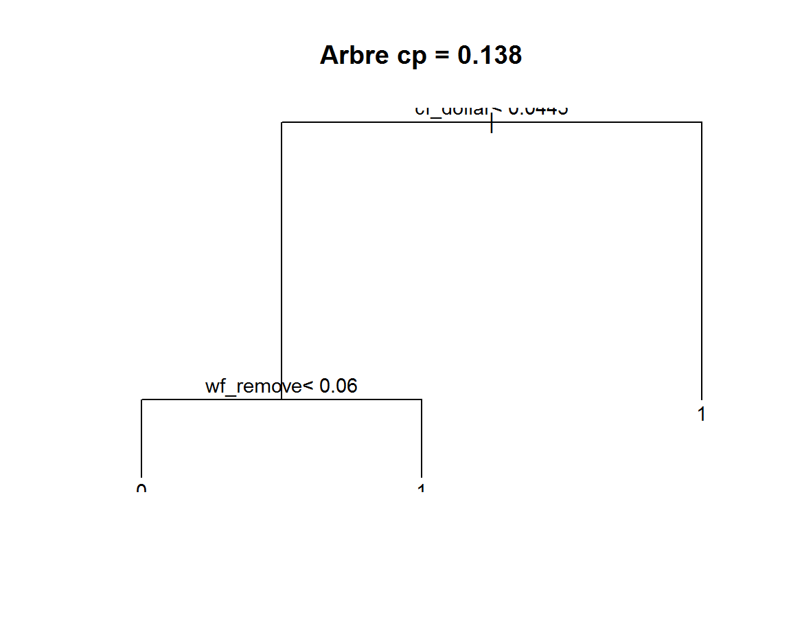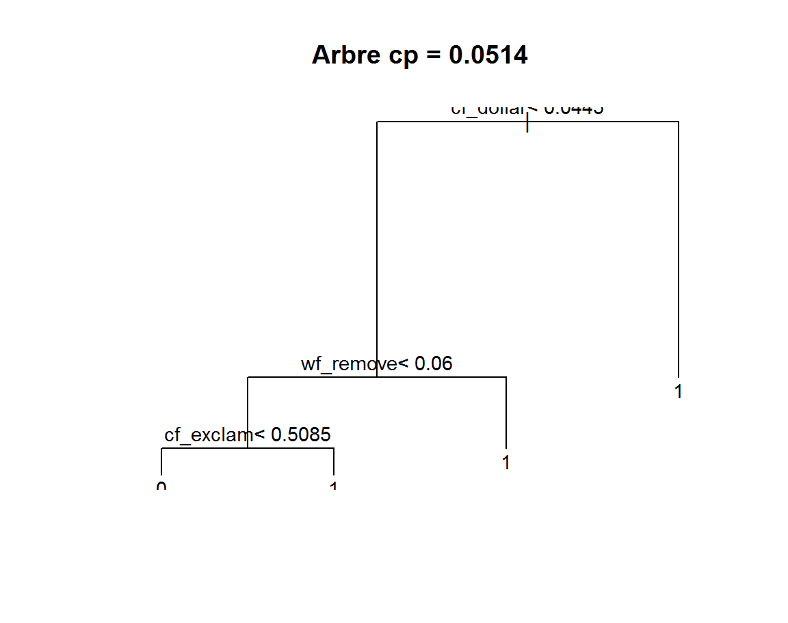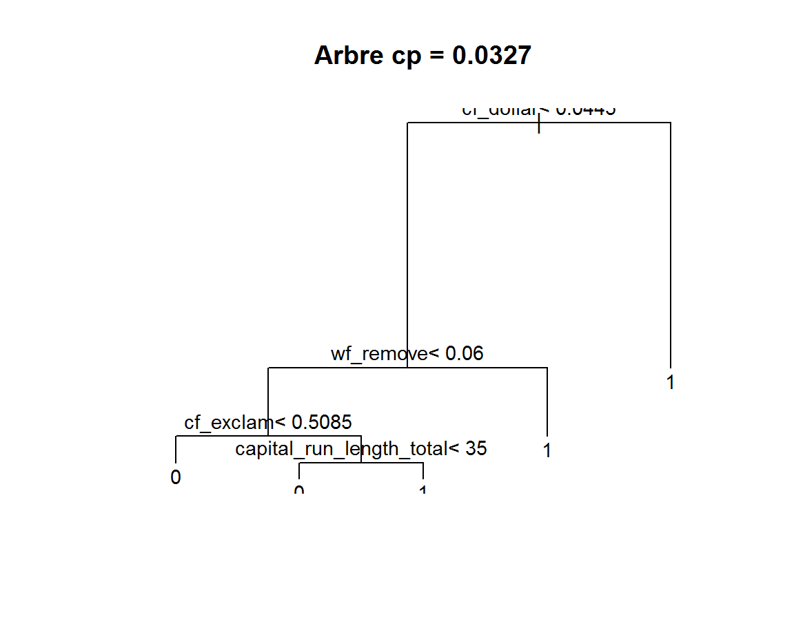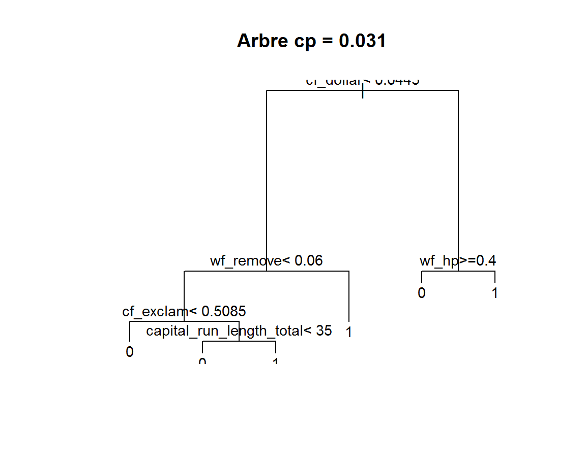
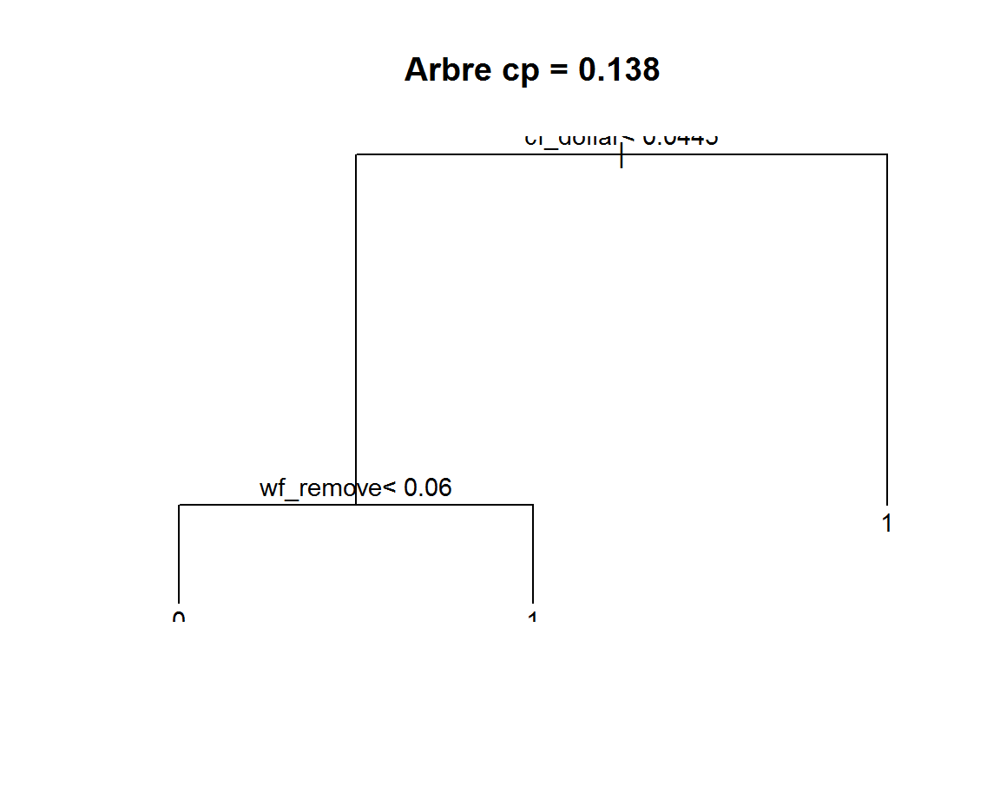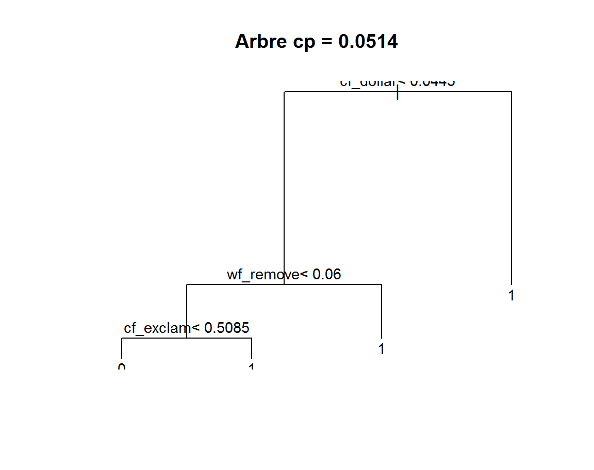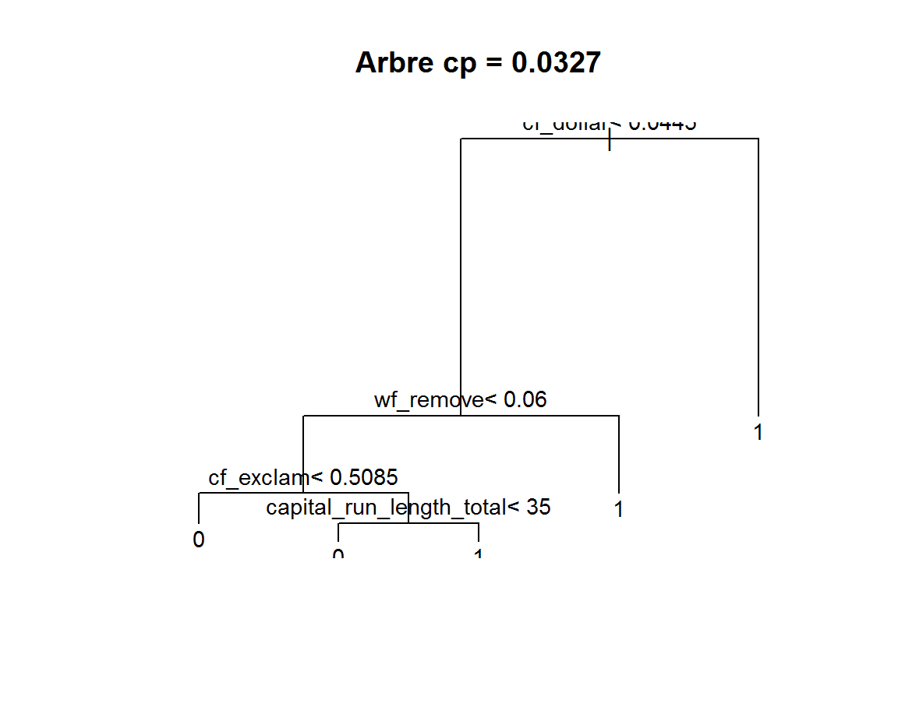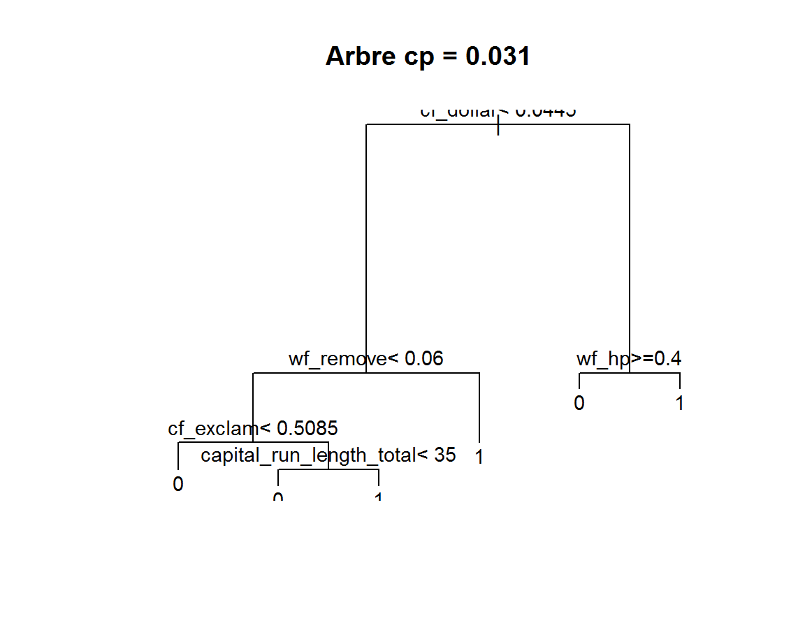
Avant de continuer, il nous faut comprendre comment sont obtenues les valeurs de la table cp.
Calcul du cp :
Le cp est obtenu pour chaque noeud \(t\). C’est à partir de la valeur de perte du noeud root loss que le calcul est fait. Prenons les 3 premières lignes (nsplit = 0, 1 , 2).
# calcul du cp
# arbre0
# n= 3067
# node), split, n, loss, yval, (yprob),
# * denotes terminal node
# 1) root 3067 1225 0 (0.60058689 0.39941311)
# 2) cf_dollar< 0.0445 2252 514 0 (0.77175844 0.22824156)
# 3) cf_dollar>=0.0445 815 104 1 (0.12760736 0.87239264)
# cp du noeud 0
(1225-514-104)/1225## [1] 0.4955102# 0.4955102 le cp du t1 ok
# noeud 1
# 2) cf_dollar< 0.0445 2252 514 0 (0.77175844 0.22824156)
# 4) wf_remove< 0.06 2043 325 0 (0.84092022 0.15907978)
# 5) wf_remove>=0.06 209 20 1 (0.09569378 0.90430622) *
(514-325-20)/1225 # 0.1379592 ok avec cp ## [1] 0.1379592#noeud 2
# 4) wf_remove< 0.06 2043 325 0 (0.84092022 0.15907978)
# 8) cf_exclam< 0.5085 1840 192 0 (0.89565217 0.10434783) *
# 9) cf_exclam>=0.5085 203 70 1 (0.34482759 0.65517241)
(325-192-70)/1225 # 0.05142857 ok cp nsplit 2 etc etc ## [1] 0.05142857arbre0$cptable[1:3,1]## 1 2 3
## 0.49551020 0.13795918 0.05142857Pour chaque noeut \(t\)
-
Prendre la valeur
lossdu noeud root. -
Prendre la valeur
lossdu noeud \(t\). -
Prendre les valeurs
lossdes fils \(t_g\) et \(t_d\).
On soustrait les loss de \(t-t_g-t_d\) et on divise par le loss du root.
Calcul de rel error :
La valeur rel error est présente dans la matrice d’information arbre0$cptable.
## CP nsplit rel error xerror xstd
## 1 0.49551020 0 1.0000000 1.0000000 0.02214215
## 2 0.13795918 1 0.5044898 0.5346939 0.01852748
## 3 0.05142857 2 0.3665306 0.4081633 0.01669956
## 4 0.03265306 3 0.3151020 0.3232653 0.01515973
## 5 0.03102041 4 0.2824490 0.3118367 0.01492832
## 6 0.01000000 5 0.2514286 0.2800000 0.01424812Cette valeur rel error est l’erreur de l’arbre pour chaque valeur de cp. C’est à dire le taux d’erreur des mal classés de l’arbre sur les données du train DATASET.train divisé par la valeur loss du noeud root.
rel error = taux erreur (matrice de confusion obtenue à partir des predict()) / expected loss du noeud root.
Il y a un “décalagage” dans la table car à ligne 6, quand la valeur du cp est atteinte, l’algorithme s’arrête. rel error vaut 1 au niveau root (expected loss=0.3994131 / expected loss=0.3994131 = 1).
Les étapes de calcul :
- Construire un arbre pénalisé par le cp de chaque ligne de la table.
- Effectuer les prédictions sur les donneés train et obtenir une matrice de confusion.
- Calculer le taux d’erreur (erreur de resubstitution) à partir de la matrice de confusion.
-
Déduire
rel erroren divisant le taux d’erreur par la valeur loss de la racine de l’arbre.
Vérification :
# Calcul rel error
# pour nsplit = 0
# on a besoin du taux d'erreur de l'arbre nsplit = 0
rel.error0 <- rpart(DATASET.train$spam~.,data=DATASET.train,
control = rpart.control(minsplit = 20, cp = 0.495510))
#prédiction sur l'échantillon train.
pred0 <- predict(rel.error0,newdata=DATASET.train,type="class")
#matrice de confusion
mc <- addmargins(table(DATASET.train$spam,pred0))
#taux d'erreur
erreur0 <- (mc[2,1]+mc[1,2])/mc[3,3] # pourcentage total de m.c
error0= (mc[2,1]+mc[1,2])/(mc[2,1]+mc[2,2]) # pourcentage de m.c par rapport aux m.c du root
# pour nsplit 1
rel.error1 <- rpart(DATASET.train$spam~.,data=DATASET.train,
control = rpart.control(minsplit = 20, cp = 0.137959))
#prédiction sur l'échantillon train.
pred1 <- predict(rel.error1,newdata=DATASET.train,type="class")
#print(summary(pred0))
#matrice de confusion
mc <- addmargins(table(DATASET.train$spam,pred1))
#taux d'erreur
erreur1 <- (mc[2,1]+mc[1,2])/mc[3,3] # pourcentage total de m.c
error1= (mc[2,1]+mc[1,2])/(mc[2,1]+mc[2,2]) # pourcentage de m.c par rapport aux m.c du root
rel.error0 #arbre avec un noeud## n= 3067
##
## node), split, n, loss, yval, (yprob)
## * denotes terminal node
##
## 1) root 3067 1225 0 (0.6005869 0.3994131)
## 2) cf_dollar< 0.0445 2252 514 0 (0.7717584 0.2282416) *
## 3) cf_dollar>=0.0445 815 104 1 (0.1276074 0.8723926) *print(erreur0) # erreur "en resubstitution"## [1] 0.2014998print(error0) # rel error## [1] 0.5044898rel.error1 #arbre avec 2 noeuds## n= 3067
##
## node), split, n, loss, yval, (yprob)
## * denotes terminal node
##
## 1) root 3067 1225 0 (0.60058689 0.39941311)
## 2) cf_dollar< 0.0445 2252 514 0 (0.77175844 0.22824156)
## 4) wf_remove< 0.06 2043 325 0 (0.84092022 0.15907978) *
## 5) wf_remove>=0.06 209 20 1 (0.09569378 0.90430622) *
## 3) cf_dollar>=0.0445 815 104 1 (0.12760736 0.87239264) *print(erreur1) # erreur "en resubstitution"## [1] 0.1463971print(error1) # rel error## [1] 0.3665306Pour la première ligne, nspit = 0, on obtient bien un arbre avec un seul noeud (arbre pénalisé par le cp). les taux d’erreur :
-
nsplit=0
- Taux d’erreur de prédiction du modèle : 0.2014998.
-
Déduction du
rel error: 0.5044898.
nsplit=1 - Taux d’erreur de prédiction du modèle : 0.1463971.
-
Déduction du
rel error: 0.3665306.
On retrouve bien les valeurs de rel error en fonction de la valeur du cp.
Pour ce qui est des valeurs xerror et xstd, nous pouvons les optenirs par validation croisée tout comme le fait le modèle rpart.
Validation croisée :
On retourve dans les options de rpart, un paramètre permettant de fixer le nombre de sous échantillons de la validation croisée.
rpart.control(xval = 10, ...), ici nous avons 10 sous échantillons.
Nous ne connaissons pas les “index” (numéros des individus) des sous échantillons de notre échantillon de départ DATASET.train qui sont utilisés dans la cross validation de rpart mais nous devrions trouver les mêmes ordres de grandeur pour xerror et xstd.
L’objectif de cette partie est de calculer par cross validation, l’erreur de prédiction et son écart type associé.
On se basera sur la profondeur de arbre0 qui est de 4, nous avons en effet 4 niveaux soit 16 noeuds possibles.
Les étapes :
- Construire un arbre pour une profondeur donnée (ici de 1 à 4).
-
Calculer par cross validation la valeur
rel errorde l’arbre de profondeur $j $. -
Calculer la moyenne des ces \(j\)
rel erroret l’écart type.
#####
# calcul de xerror xstd
# validation croisée
#####
#init
n=dim(DATASET.train)[1]
K=10 # nombres de blocs de la c.v
size=n%/%K # taille des blocs en nombre entier
Ind=rep(1:K,size)
set.seed(1024)
block=sample(Ind,length(Ind),rep=F)
block=as.factor(block) # permet de nommer facilement les blocs
# profondeux max de l'arbre
max.profondeur = 4 # défini sur arbre0
res=c()
for(j in 1:max.profondeur )
{
# Début de la c.v
err=c();cp.x=matrix(nrow = 10,byrow = T) # vecteur des erreurs
for(i in 1:K) {
# pour calcul de l'erreur normalisée
loss = table(DATASET.train[block!=i,]$spam)["1"]/length(DATASET.train[block!=i,]$spam)
# arbre de profondeur j
treecp= rpart(DATASET.train[block!=i,]$spam~ ., data=DATASET.train[block!=i,],
method="class", control=rpart.control(cp=0, maxdepth =j))
# prédiction
pred= predict(treecp,newdata=DATASET.train[block==i,],type="class") # prediction sur le bloc
mc<-table(DATASET.train$spam[block==i],pred)
err[i]=((mc[2,1]+mc[1,2])/sum(mc)) / loss
}
xerror = mean(err, na.rm = T)
xstd = sd(err, na.rm = T) / sqrt((length(is.na(err)==F)-1))
# print(err) pour control
res=rbind(res, xerror, xstd)
}
res=matrix(res, ncol=2, byrow=T)
data.frame(xerror=res[,1], xstd=res[,2],
row.names = paste0("profondeur arbre = ", c(1:j)))
# xerror xstd
# profondeur arbre = 1 0.5235217 0.01792813
# profondeur arbre = 2 0.3519275 0.01449117
# profondeur arbre = 3 0.3004595 0.01427156
# profondeur arbre = 4 0.2474022 0.01145326 => a comparer avec la ligne correspondant a la taille maximale de arbre0
# CP nsplit rel error xerror xstd
# 6 0.01000000 5 0.2514286 0.2685714 0.01399013On constate que xerror diminue lorsque l’arbre se complexifie jusqu’à la valeur correspondant à la profondeur de arbre0. A titre de comparaison, nous retrouvons a peu près les valeurs.
Variables d’importance
Les variables d’importance correspondent aux variables actives de l’arbre et aux variables surrogate ordonnées par importance. Nous avons deux cas :
-
Les variables actives ou primary splits, l’importance correspond à la valeur
improvedu noeud \(t\). -
Pour les surrogate, c’est la valeur de
adjmultiplié par leimprovedu primary split pour chaque noeud \(t\).
Les variables actives sont celles de l’arbre de sortie (les primaty split) :
printcp(arbre0)
# Classification tree:
# rpart(formula = DATASET.train$spam ~ ., data = DATASET.train)
#
# Variables actually used in tree construction:
# [1] capital_run_length_total cf_dollar cf_exclam wf_hp
# [5] wf_remove
#
# Root node error: 1225/3067 = 0.399La liste des variables actives par ordre alphabétique:
[1] capital_run_length_total cf_dollar cf_exclam wf_hp
[5] wf_remove
Vérifications des calculs :
Prenons les 3 premières variables de arbre0$variable.importance.
arbre0$variable.importance[1:3]## cf_dollar wf_remove wf_000
## 496.6125 210.5973 183.1602Résumons la sortie arbre0$splits à ces 3 variables.
arbre0$splits[which(rownames(arbre0$splits) %in% names(arbre0$variable.importance[1:3])) ,]## count ncat improve index adj
## cf_dollar 3067 -1 496.6125453 0.0445 0.00000000
## wf_remove 3067 -1 395.6875398 0.0100 0.00000000
## wf_000 0 -1 0.8311053 0.0450 0.36441718
## wf_remove 2252 -1 210.5972844 0.0600 0.00000000
## wf_000 0 -1 0.9025942 0.6200 0.01970443# wf_000 est une surrogate qui apparait 2 fois
(0.36441718*496.6125453 ) + (0.01970443*210.5972844 )## [1] 185.1238Pour résumer les variables d’importance sont les valeurs improve des primary split. Pour les surrogate, en cas de répétition, adj est multiplié par improve du primary split et sommé par nombre d’apparition.
CP optimal et élagage
C’est à partir de la table cp que nous allons déterminer notre arbre optimal. C’est à dire celui qui minimise l’erreur xerror obtenu par validation croisée.
Pour rappel, la table cp :
## CP nsplit rel error xerror xstd
## 1 0.49551020 0 1.0000000 1.0000000 0.02214215
## 2 0.13795918 1 0.5044898 0.5346939 0.01852748
## 3 0.05142857 2 0.3665306 0.4081633 0.01669956
## 4 0.03265306 3 0.3151020 0.3232653 0.01515973
## 5 0.03102041 4 0.2824490 0.3118367 0.01492832
## 6 0.01000000 5 0.2514286 0.2800000 0.01424812Nous pouvons représenter l’arbre final ainsi que la diminution de xerror pour chaque valeur de cp :
## représentation graphique de l'arbre
par(mfrow=c(1,2))
plot(arbre0)
text(arbre0)
plotcp(arbre0, minline = T)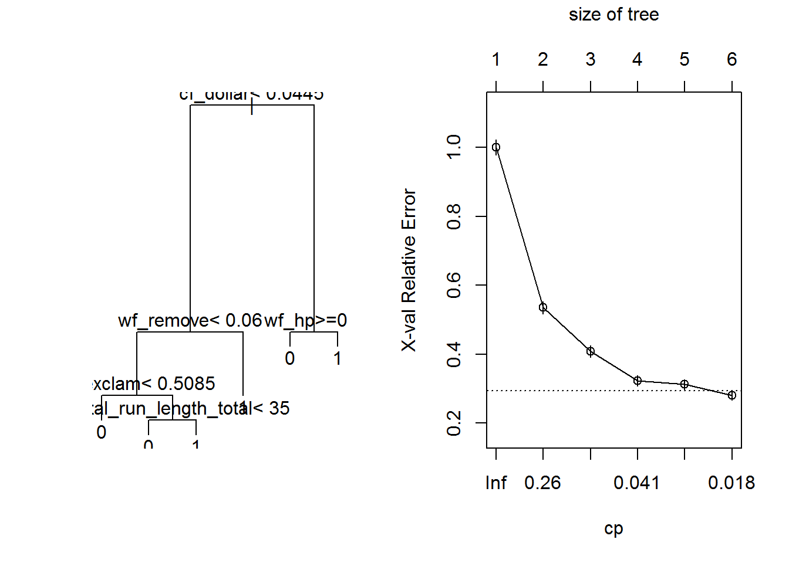
# regle 1-se
min(arbre0$cptable[, "xerror"]) + (1*arbre0$cptable[ which.min(arbre0$cptable[, "xerror"]), "xstd"])## [1] 0.2942481Les valeurs de cp prises par défaut ne permettent pas de minimiser ici le critère d’erreur.
La ligne pointillée est calculée avec la règle dite du \("1-SE"\) (règle de l’écart type, Breiman et al, 1984).
Dans notre cas, l’erreur moyenne par validation croisée xerror diminue mais diminue-t-elle encore ? Pour le savoir, nous avons besoin de générer des arbres plus complexes et donc diminuer la valeur du cp.
Nouvel arbre :
Nous avons besoin de construire un nouvelle arbre plus complexe que celui avec la valeur cp par défaut.
set.seed(1024)
arbre1 = rpart(DATASET.train$spam~.,data=DATASET.train,
control = rpart.control(cp = 0.001))
# graphique
par(mfrow=c(1,2))
plot(arbre1)
text(arbre1,pretty=0)
plotcp(arbre1, minline = T)Nous appliquons la règle de l’écart type (“1-SE”) pour choisir un cp inférieur mais aussi l’arbre le plus petit.
# 1-se
se = min(arbre1$cptable[, "xerror"]) + (1*arbre1$cptable[ which.min(arbre1$cptable[, "xerror"]), "xstd"])
arbre1$cptable## CP nsplit rel error xerror xstd
## 1 0.495510204 0 1.0000000 1.0000000 0.02214215
## 2 0.137959184 1 0.5044898 0.5346939 0.01852748
## 3 0.051428571 2 0.3665306 0.4081633 0.01669956
## 4 0.032653061 3 0.3151020 0.3232653 0.01515973
## 5 0.031020408 4 0.2824490 0.3118367 0.01492832
## 6 0.009795918 5 0.2514286 0.2800000 0.01424812
## 7 0.008979592 6 0.2416327 0.2661224 0.01393382
## 8 0.006530612 8 0.2236735 0.2628571 0.01385818
## 9 0.006122449 12 0.1975510 0.2457143 0.01344982
## 10 0.004489796 14 0.1853061 0.2432653 0.01338988
## 11 0.004081633 16 0.1763265 0.2432653 0.01338988
## 12 0.002993197 18 0.1681633 0.2342857 0.01316650
## 13 0.002040816 21 0.1591837 0.2261224 0.01295833
## 14 0.001632653 23 0.1551020 0.2285714 0.01302131
## 15 0.001469388 28 0.1469388 0.2310204 0.01308383
## 16 0.001224490 33 0.1395918 0.2293878 0.01304220
## 17 0.001000000 35 0.1371429 0.2293878 0.01304220#la valeur du 1-se
se## [1] 0.2390808#selection du plus petit arbre
arbre1$cptable[arbre1$cptable[,"xerror"]<se , "xerror"]## 12 13 14 15 16 17
## 0.2342857 0.2261224 0.2285714 0.2310204 0.2293878 0.2293878L’arbre minimal avec l’erreur la plus petite est atteint avec un cp de 0.002993197 (ligne 12 de la table cp) et avec une taille de 18 noeuds.
Nous allons construire l’arbre optimal et nous pouvons maintenant tester et comparer les performances des modèles arbre0, arbre1 et arbre1.prune sur un échantillon test.
arbre1.prune = prune(arbre1, cp=0.002993197)
plot(arbre1.prune)
title(main=paste0("Arbre élagué ","cp = ", "0.002993197"), cex.main = 0.8, outer=F)
text(arbre1.prune,pretty=0)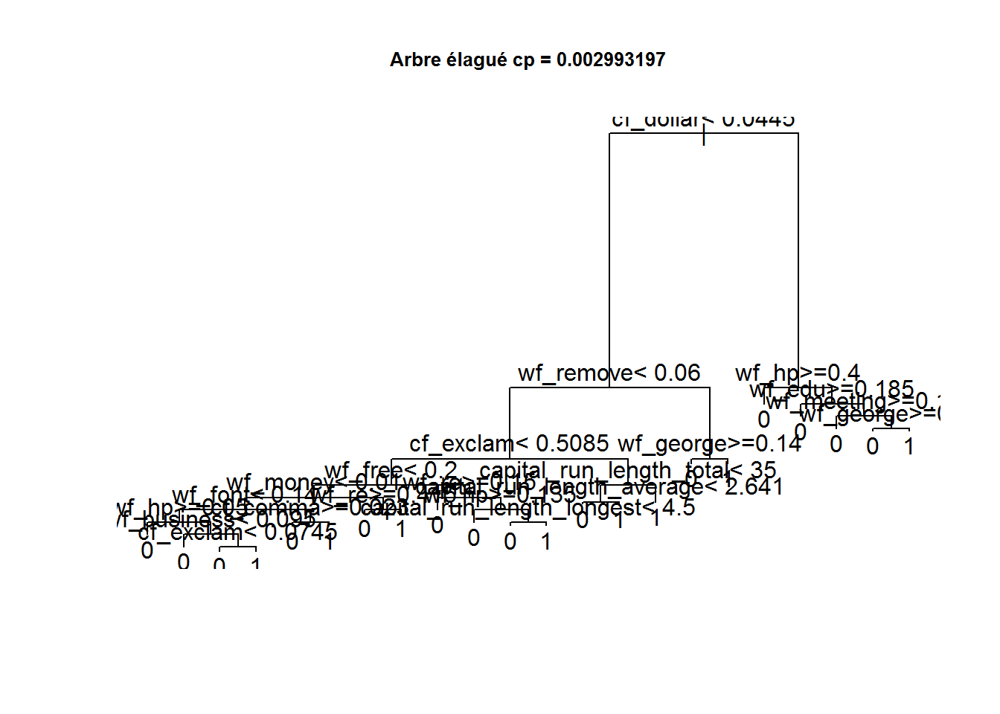
Application sur échantillon test
Nous allons maintenant appliquer aux trois modèles un échantillon test.
Les trois modèles :
-
arbre0: arbre construit avec les paramètres par défaut. -
arbre1: arbre construit avec un cp arbitrairement plus faible (cp=0.001). -
arbre1.prune: arbre élagué construit à partir dearbre1.
#####
# Echantillon test
#####
# arbre0
#prédiction sur l'échantillon train.
pred <- predict(arbre0,newdata=DATASET.test,type="class")
#matrice de confusion
mc <- addmargins(table(DATASET.test$spam,pred))
#taux d'erreur
erreur0 <- (mc[2,1]+mc[1,2])/mc[3,3] # pourcentage total de m.c
# arbre1
#prédiction sur l'échantillon train.
pred <- predict(arbre1,newdata=DATASET.test,type="class")
#matrice de confusion
mc <- addmargins(table(DATASET.test$spam,pred))
#taux d'erreur
erreur1 <- (mc[2,1]+mc[1,2])/mc[3,3] # pourcentage total de m.c
# arbre1.prune
#prédiction sur l'échantillon train.
pred <- predict(arbre1.prune,newdata=DATASET.test,type="class")
#matrice de confusion
mc <- addmargins(table(DATASET.test$spam,pred))
#taux d'erreur
erreur1.prune <- (mc[2,1]+mc[1,2])/mc[3,3] # pourcentage total de m.c
# résultats
data.frame(arbre0=erreur0, arbre1=erreur1, arbre1.prune=erreur1.prune)
# arbre0 arbre1 arbre1.prune
# 0.1043025 0.0821382 0.0958279Sur ce jeu de données “test”, nous abtenons des taux d’erreur (taux de resubstitution) :
-
arbre0: 10%. -
arbre1: 8.2%. -
arbre1.prune: 9.5%.
Les résultats sont obtenus sur un seul échantillon et nous pouvons “boostraper” l’échantillon test afin de mettre en évidence le biais .
Boostrap sur échantillon test :
######
# BOOTSRAP TEST
######
# une fonction permettant de renvoyer le taux d'erreur
#data test, vecteur index aleatoire, modele
err.boot=function(data, index, modele){
n = dim(data)[1]
ech.tst = data[index[1:n], ] #sous échantillon
pred.tst = predict(modele, newdata=ech.tst, type="class")
mc <- table(ech.tst$spam, pred.tst)
err <- (mc[2,1]+mc[1,2])/sum(mc) # pourcentage total de m.c
return(err)
}
#test fonction
m=dim(DATASET.test)[1]
#set.seed(50)
ind=sample(1:m, replace = T)
err.boot(DATASET.test, ind, arbre0)
library(boot)
# arbre0
set.seed(50)
arbre0.boot = boot(DATASET.test, err.boot, modele=arbre0, R=200)
print(arbre0.boot)
# ORDINARY NONPARAMETRIC BOOTSTRAP
#
# Call:
# boot(data = DATASET.test, statistic = err.boot, R = 200, modele = arbre0)
#
#
# Bootstrap Statistics :
# original bias std. error
# t1* 0.1043025 0.0001205997 0.008020043Le bootstrap permet de constater le biais sur l’échantillon test de notre taux d’erreur. Ici nous avons un biais faible et nous pouvons déduire une estimation sans biais du taux d’erreur.
2*arbre0.boot$t0 - mean(arbre0.boot$t) # 0.1041819 estimation non biaisée.
Comportement moyen
L’objectif de cette partie est d’observer comment des arbres de complexité différentes se comportent. Nous allons générer un nouveau train/test de façon aléatoire et éxecuter les prédictions pour 4 types d’arbre :
- Un arbre avec paramètre par défaut (cp=0.001).
- Un arbre avec un cp arbitraire(cp=0.0001).
- Un arbre élagué à partir de l’arbre arbitraire.
- Un arbre maximal (cp=0).
#######
# Comportement moyen de différents arbres
#######
#init
err.defaut=c();err.arbi=c();err.prune=c();err.max=c()
######
####BOUCLAGE
######
for(i in 1:100){
#initialisation du seed
set.seed(1423+i)
#generation de l'echantillon TRAIN
#rappel proportion au global "email 61%" "spam 39%"
trainIndex <- sample(index, trunc(length(index) * 0.666666666666667))
DATASET.train <- Don_spam[trainIndex, ]
#proportion de spam %
res.prop.train.spam[i] = round( (length(DATASET.train$spam[which(DATASET.train$spam==1)]) /nrow(DATASET.train)) * 100,2)
#generation de l'echantillon TEST
DATASET.test <- Don_spam[-trainIndex, ]
res.prop.test.spam[i] = round( (length(DATASET.test$spam[which(DATASET.test$spam==1)]) /nrow(DATASET.test)) * 100,2)
library(rpart)
######
# arbre par defaut
######
arb.defaut = rpart(DATASET.train$spam ~ ., DATASET.train)
pred.defaut = predict(arb.defaut, newdata=DATASET.test, type="class")
mc <- table(DATASET.test$spam, pred.defaut)
err.defaut[i] <- (mc[2,1]+mc[1,2])/sum(mc) # pourcentage total de m.c
######
# arbre cp arbitraire cp=0.001
######
arb.arbi = rpart(DATASET.train$spam ~ ., DATASET.train,
control=rpart.control(cp=0.001))
pred.arbi = predict(arb.arbi, newdata=DATASET.test, type="class")
mc <- table(DATASET.test$spam, pred.arbi)
err.arbi[i] <- (mc[2,1]+mc[1,2])/sum(mc) # pourcentage total de m.c
######
# arbre prune
######
# regle du "1- se"
se=min(arb.arbi$cptable[, "xerror"]) + (1*arb.arbi$cptable[ which.min(arb.arbi$cptable[, "xerror"]), "xstd"])
#selection du plus petit arbre
cp.ind = arb.arbi$cptable[arb.arbi$cptable[,"xerror"]<se , "xerror"][1]
cp.ind= as.integer(names(cp.ind))
cp.prune = arb.arbi$cptable[cp.ind,"CP"]
#arbre optimal
arb.prune = prune(arb.arbi, cp=cp.prune)
pred.prune = predict(arb.prune, newdata=DATASET.test, type="class")
mc <- table(DATASET.test$spam, pred.prune)
err.prune[i] <- (mc[2,1]+mc[1,2])/sum(mc) # pourcentage total de m.c
######
# arbre max
######
arb.max = rpart(DATASET.train$spam ~ ., DATASET.train,
control=rpart.control(cp=0))
pred.max = predict(arb.max, newdata=DATASET.test, type="class")
mc <- table(DATASET.test$spam, pred.max)
err.max[i] <- (mc[2,1]+mc[1,2])/sum(mc) # pourcentage total de m.c
}
mat = rbind(summary(err.defaut, digits = 4),
summary(err.arbi, digits = 4),
summary(err.prune, digits = 4),
summary(err.max, digits = 4)
)
row.names(mat) = c("arbre défaut", "arbre cp arbitraire", "arbre prune", "arbre max")
# Min. 1st Qu. Median Mean 3rd Qu. Max.
# arbre défaut 0.08475 0.10100 0.10500 0.10610 0.11080 0.1291
# arbre cp arbitraire 0.06323 0.08149 0.08703 0.08700 0.09322 0.1095
# arbre prune 0.07301 0.08589 0.09126 0.09174 0.09844 0.1115
# arbre max 0.06323 0.08409 0.08963 0.08968 0.09550 0.1134On constate que en moyenne le taux d’erreur de substitution est proportionnel à la complexité de l’arbre. Sur ces données, l’arbre maximum (risque de surapprentissage ) donne de bons résultats. D’ailleurs si l’on regardait le xerror de l’arbre maximal, on voit que l’erreur se stabilise en fonction de la complexité et ne remonte pas.
Concernant l’arbre élagué, il est moins complexe et fournit des résultats en moyenne légèrement moins bon que l’arbre avec cp arbitraire ou l’arbre maximal. Cependant, il est moins complexe et donc plus stable en théorie.
J’ai également essayé de générer des arbres maximals encore plus sujet au surapprentissage avec le paramètre minbucket = 1. Je ne constate pas sur ces données de cas de “décrochage” (taux d’erreur important) pour un arbre maximal.
J’en conclu une remarque et également une question :
Peut-on en conclure que les arbres de classifications CART ne sont pas sujet au surapprentissage ?
Stabilité, importance des variables
A travers mes recherches sur CART, j’ai pu lire que les arbres sont sujet à des perturbations et qu’ils ont une certaine variance ou instabilisté. Preuve à l’appui, des études empiriques (Breiman 1996a et Ghattas 1999b) ont montré que les arbres sont instables suite à des perturbations de données.
L’algorithme CART à travers rpart fournit une liste de variables d’importance. Nous avons vu dans une partie précedente le détail de calcul de l’importance d’une variable. Une méthode de mise en évidence de cette instailité est proposé dans Ghattas 1999b.
La méthode est de construire par bootstrap des éhantillons train et d’analyser les valeurs des variables d’importance. Pour rappel rpart nous fournit un vecteur d’importance des variables arbre0$variable.importance.
Dans cette partie, nous allons bootsraper l’échantillon train de départ DATASET.train, visualiser les valeurs et agréger les variables pour fournir un score de 1 à 100. Pour cet exemple, nous allons utiliser le modèle par défaut (avec les paramètres par défaut de rpart)
########
# Stabilité variable importance par bootstrap
########
## Bootstrap du train à partir de DATASET.train
index <- 1:nrow(DATASET.train)
# bootstrap du train sur modèle arbre1.prune
res=list();longueur.list=c()
iteration=40
for(i in 1:iteration){
#initialisation du seed
set.seed(1423+i)
boot.index <- sample(index, replace = T)
train.boot <- DATASET.train[boot.index, ]
######
# arbre par defaut
######
arb.defaut = rpart(train.boot$spam ~ ., train.boot)
imp.defaut = arb.defaut$variable.importance
#stocker la liste des variales d'importance
res[[i]] = imp.defaut
}
# res # list des variables d'importance
#les noms des var sans doublon
list.nom.var = unique(names(unlist(res)))
# INIT : data frame initial
t=data.frame(row.names =list.nom.var)
# constrution du data frame terme à terme
for(i in 1:iteration){
var = res[[i]]
var.name = names(var)
sum.var = sum(var)
for(j in 1:length(var)){
var[j] = (var[j]/sum.var)*100
for(k in 1:length(list.nom.var)){
if(var.name[j]==list.nom.var[k]) t[k,paste0("iter",i)]=var[j]
}
}
}
### Agregation par ligne
t[, "somme ligne"]=rowSums(t, na.rm = T) # la matrice rapporté sur 100 par coclonne (itération)
### boxplot des variables d'importances normalisé (normalisé %)
boxplot(t(t[,1:iteration]), las=2) # libelé vertical
### affichage plus compact
summary(t[,iteration+1])
boxplot(t(t[ t[,iteration+1]>10 ,1:iteration]), las=2) # >10% pour chaque variable
### tableau final agrégation des variables d'importance pour n itérations
tab.final = prop.table(t[, "somme ligne"]) * 100
# tri par ordre d'importance
# test est une variable bidon pour avec 2 colonnes ce qui garde les noms de ligne sinon vecteur
tab.final = data.frame(tab.final, "test") ; row.names(tab.final) = row.names(t)
colnames(tab.final)="importance"
tab.final = tab.final[order(tab.final$importance, decreasing = T),]
x=data.frame(tab.final[,1]) ; row.names(x) = row.names(tab.final) ; colnames(x)="importance" ; x
# importance > 0.5 ~= 1% sur 40 bootstrap
# importance
# cf_dollar 20.899146637
# cf_exclam 12.459647639
# wf_remove 10.072738880
# capital_run_length_longest 7.744706579
# wf_000 6.487406449
# wf_money 6.442727300
# wf_free 4.390655376
# capital_run_length_average 4.107701624
# wf_your 4.023678107
# capital_run_length_total 3.896851914
# wf_hp 3.112132471
# wf_receive 2.498001148
# wf_credit 1.854512702
# wf_you 1.467290925
# wf_hpl 1.372379042
# wf_order 1.327879981
# wf_all 1.098003360
# wf_george 0.936810007
# wf_650 0.602349253
# wf_business 0.601667733Boxplot des variables d’importances par bootstrap : 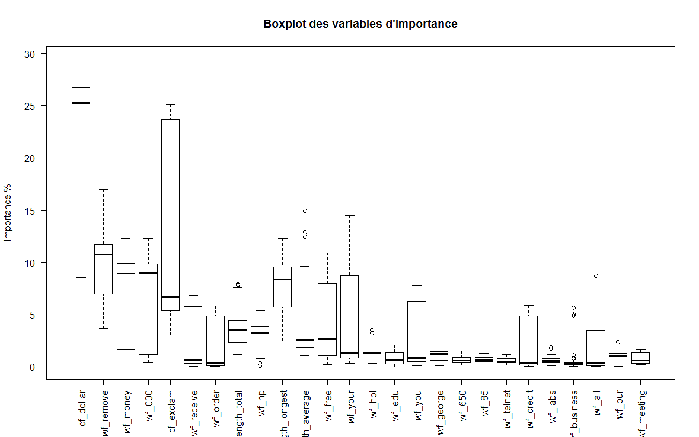
Hiérarchie des variables d’importances par bootstrap : 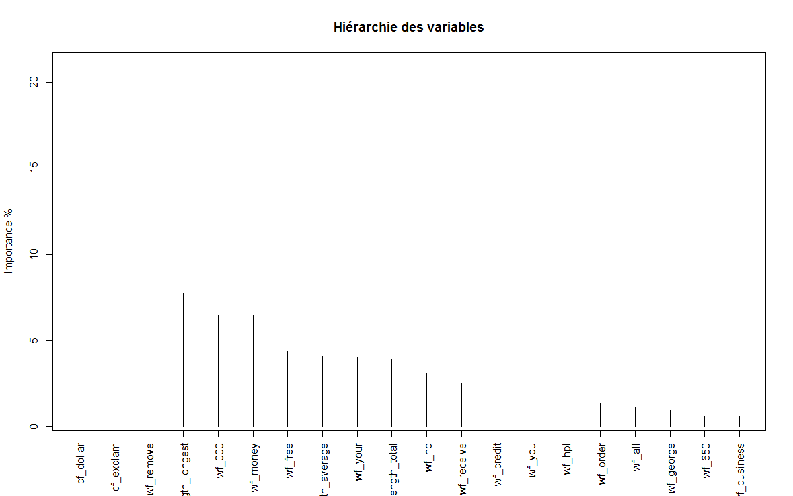
A travers le boxplot, nous avons un aperçu des variables d’importance.
Enfin, nous pouvons déduire une hiérarchie normalisée de toutes les variables d’importance.
L’arbre maximal obtenu, avec les paramètres par défaut, comporte 5 noeuds et 6 feuilles (soit 5 variables). On peut voir que l’arbre prédit à gauche la classe ‘0’ (“mail”) et à droite la classe ‘1’ (“spam”).
Pour analyser la sortie brute du modèle, nous avons :
node: le numéro du noeud \(t\).split: le nom du noeud \(t\).n: le nombre d’éléments du noeud \(t\).loss: le nombre d’éléments de la classe minoritaire (traduit la perte) de \(t\).yval: la classe majoritaire du noeud \(t\).(yprob): les proportions en fonction de la classe \(j\) du noeud \(t\)Hormis pour la racine (root), la valeur du seuil de coupe de la variable est affiché avec le nom de la variable.